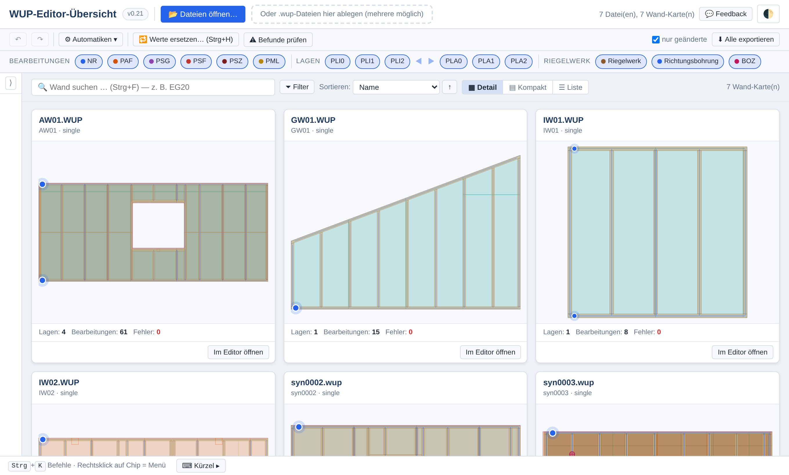

WUP-Dateien prüfen und bearbeiten
Drei freie Werkzeuge für die Maschinendateien der Holzrahmenbau-Elementfertigung. Sie laufen im Browser, brauchen keine Installation und schicken keine Datei ins Netz.
Zum Arbeiten ohne Netz lassen sich beide Werkzeuge herunterladen.

Die Werkzeuge
- WUP-Editor-Übersicht
- Lädt einen ganzen Auftrag auf einmal, zeigt je Wand eine Karte mit Befunden und rechnet Prüfungen und Automatiken über alle Dateien. Eine einzelne Wand geht mit einem Klick in den Editor und kommt geändert zurück. Starten · Doku
- WUP-Editor
- Öffnet eine WUP-Datei und zeigt sie als Draufsicht, Schnitt und in 3D. Prüft sie gegen 25 Regeln, von der fehlenden Sperrfläche über Nagelreihen auf einer Plattenkante bis zum unbekannten Gerät. Bearbeitungen lassen sich ändern, verschieben und neu anlegen; Automatiken rechnen Über- und Unterschnitt, Freistiche und Sperrflächen. Eine unveränderte Datei kommt Byte für Byte gleich wieder heraus. Starten · Doku
- WUP-MCP-Server
- Stellt dieselben Prüfungen und Automatiken KI-Assistenten über das Model Context Protocol bereit, dazu die Suche in der WUP-Schnittstellenbeschreibung. Braucht Node.js, keine weiteren Pakete. Einrichten

Herunterladen
Jedes Werkzeug ist eine einzelne HTML-Datei, die per Doppelklick im Browser läuft. Der Dateiname enthält die Version und Datum und Uhrzeit des Herunterladens, zum Beispiel wup_editor_v2.65_2026-11-13_1432.html.
| Werkzeug | Version | |
|---|---|---|
| WUP-Editor-Übersicht | Herunterladen | |
| WUP-Editor | Herunterladen | |
| WUP-MCP-Server | ZIP von GitHub · Anleitung |
Editor und Übersicht in denselben Ordner legen. Beim ersten Öffnen per Doppelklick fragt die Übersicht einmal nach der Editor-Datei, weil der Browser ihr das selbstständige Laden lokaler Dateien nicht erlaubt.
Beispieldateien
Neun frei erfundene Wände in zwei üblichen Schreibweisen, zum Ausprobieren. Sie enthalten keine echten Projektdaten. Eine Datei ist absichtlich fehlerhaft und zeigt, wie Befunde aussehen. Heruntergeladene Dateien bekommen Datum und Uhrzeit in den Namen.
Vor dem ersten Einsatz
- Gerätebelegung eintragen. Beim ersten Start fragt der Editor, welches Nagel- oder Klammergerät an der eigenen Anlage hinter welchem NR-Index steht. Ohne diese Angabe meldet er jede Nagelreihe als unbekannt.
- Maschinenwerte prüfen. Größte Wand, Säge- und Frästiefe und die Freistich-Einstellungen sind Vorgaben einer Anlage und in den Automatik-Einstellungen änderbar.
- Mit einer Beispielwand probieren. Neun frei erfundene Wände stehen oben unter Beispieldateien.
Die Schritte im Einzelnen stehen in der Doku.
Jede Datei vor der Fertigung prüfen. Die Werkzeuge schreiben Maschinendateien und werden ohne jede Gewährleistung bereitgestellt. Was sie melden oder nicht melden, ersetzt nicht die Prüfung durch eine fachkundige Person.
Quelltext und Lizenz
Der Quelltext liegt auf GitHub und steht unter der GNU General Public License 3.0. Fehlermeldungen und Vorschläge sind dort willkommen. Die Oberfläche der Werkzeuge ist deutsch.
„WUP“ ist der Name des Dateiformats. Die Werkzeuge sind kein Produkt der WEINMANN Holzbautechnik GmbH oder von HOMAG; die beiliegende Schnittstellenbeschreibung hat WEINMANN unter der MIT-Lizenz veröffentlicht.